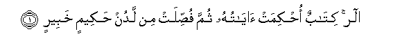
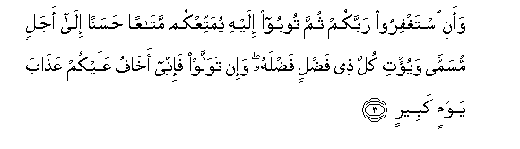
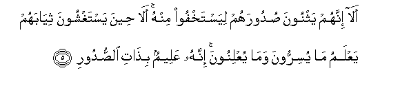
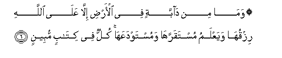
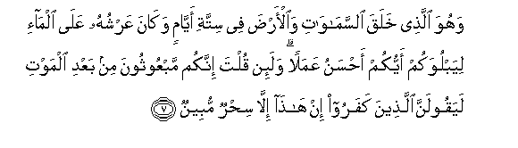
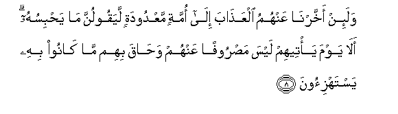

Sacred Texts Islam Index
Hypertext Qur'an Unicode Palmer Pickthall Yusuf Ali English Rodwell
Sūra XI.: Hūd (The Prophet Hūd). Index
Previous Next

The Holy Quran, tr. by Yusuf Ali, [1934], at sacred-texts.com
Sūra XI.: Hūd (The Prophet Hūd).
Section 1

1. Alif-lam-ra kitabun ohkimat ayatuhu thumma fussilat min ladun hakeemin khabeerin
1. A. L. R.
(This is) a Book,
With verses basic or fundamental
(Of established meaning),
Further explained in detail,—
From One Who is Wise
And Well-Acquainted (with al] things):
2. Alla taAAbudoo illa Allaha innanee lakum minhu natheerun wabasheerun
2. (It teacheth) that ye should
Worship none but God.
(Say:) "Verily I am
(Sent) unto you from Him
To warn and to bring
Glad tidings:

3. Waani istaghfiroo rabbakum thumma tooboo ilayhi yumattiAAkum mataAAan hasanan ila ajalin musamman wayu/ti kulla thee fadlin fadlahu wa-in tawallaw fa-inee akhafu AAalaykum AAathaba yawmin kabeerin
3. "(And to preach thus), "Seek ye
The forgiveness of your Lord,
And turn to Him in repentance;
That He may grant you
Enjoyment, good (and true),
For a term appointed,
And bestow His abounding grace
On all who abound in merit!
But if ye turn away,
Then I fear for you
The Penalty of a Great Day:
4. Ila Allahi marjiAAukum wahuwa AAala kulli shay-in qadeerun
4. "'To God is your return,
And He hath power
Over all things.'"

5. Ala innahum yathnoona sudoorahum liyastakhfoo minhu ala heena yastaghshoona thiyabahum yaAAlamu ma yusirroona wama yuAAlinoona innahu AAaleemun bithati alssudoori
5. Behold! they fold up
Their hearts, that they may lie
Hid from Him! Ah! even
When they cover themselves
With their garments, He knoweth
What they conceal, and what
They reveal: for He knoweth
Well the (inmost secrets)
Of the hearts

6. Wama min dabbatin fee al-ardi illa AAala Allahi rizquha wayaAAlamu mustaqarraha wamustawdaAAaha kullun fee kitabin mubeenin
6. Where is no moving creature
On earth but its sustenance
Dependeth on God: He knoweth
The time and place of its
Definite abode and its
Temporary deposit:
All is in a clear Record.

7. Wahuwa allathee khalaqa alssamawati waal-arda fee sittati ayyamin wakana AAarshuhu AAala alma-i liyabluwakum ayyukum ahsanu AAamalan wala-in qulta innakum mabAAoothoona min baAAdi almawti layaqoolanna allatheena kafaroo in hatha illa sihrun mubeenun
7. He it is Who created
The heavens and the earth
In six Days—and His Throne
Was over the Waters—
That He might try you,
Which of you is best
In conduct. But if
Thou wert to say to them,
"Ye shall indeed be raised up
After death", the Unbelievers
Would be sure to say,
"This is nothing but
Obvious sorcery!"

8. Wala-in akhkharna AAanhumu alAAathaba ila ommatin maAAdoodatin layaqoolunna ma yahbisuhu ala yawma ya/teehim laysa masroofan AAanhum wahaqa bihim ma kanoo bihi yastahzi-oona
8. If We delay the penalty
For them for a definite term,
They are sure to say,
"What keeps it back?"
Ah! On the day it (actually)
Reaches them, nothing will.
Turn it away from them,
And they will be completely
Encircled by that which
They used to mock at!